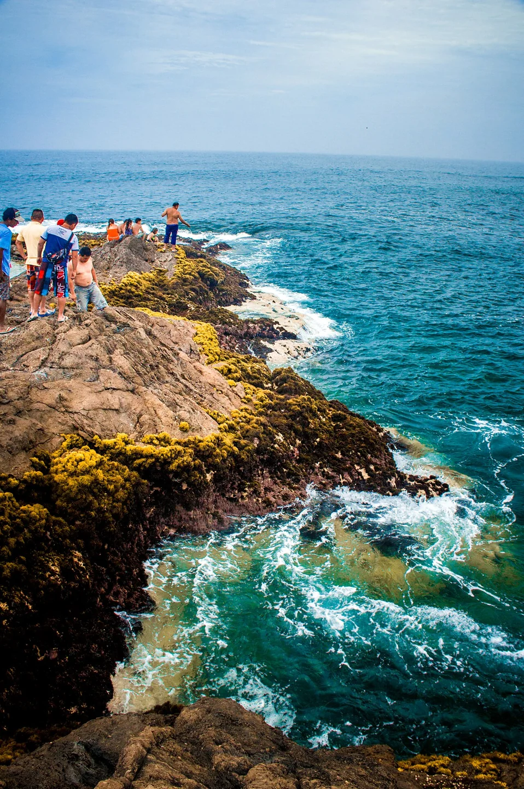
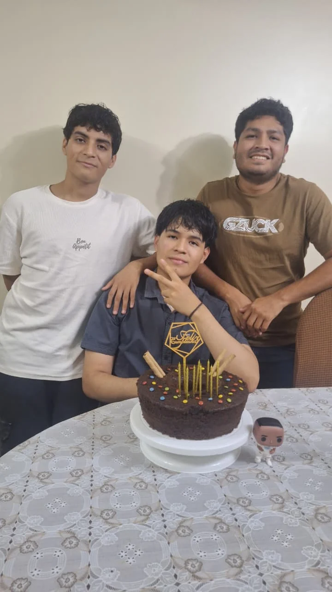

Familia
Mi familia, mi punto de partida
Mis papás, mis hermanos y el lugar donde empezó mi historia.
Leer entradaNUEVO CHIMBOTE, PERÚ
Soy Diogo Amir Flores Vásquez y estoy terminando Ingeniería de Sistemas e Informática en la Universidad Nacional del Santa. Aquí escribo sobre mi familia, lo que aprendo y los lugares que voy conociendo.
Historias de casa, de la universidad y de los viajes con Angie.
Familia
Mis papás, mis hermanos y el lugar donde empezó mi historia.
Leer entrada
Estudios
De mis días en el colegio al décimo ciclo de Ingeniería de Sistemas e Informática.
Leer entrada
Viajes
De Huaraz y las playas de Áncash a una lista de destinos que sigue creciendo.
Leer entrada
Tengo 22 años. Nací el 4 de junio de 2004 en el Hospital Regional Eleazar Guzmán Barrón, en Nuevo Chimbote. Allí crecí con mis papás, Carlos Flores y Corali Vásquez, y con mis hermanos, Jean e Imanol.
Quiero ser un ingeniero capaz de resolver problemas que le importen a la gente y darle a mi familia motivos para sentirse orgullosa. Con el tiempo, también quiero ser un buen esposo y un padre presente.
Mi camino en la ingenieríaLo que ya recorrimos con Angie y los destinos que queremos conocer.
Cumpleaños, días de entrenamiento y momentos con Angie.